规定初始像素覆盖已通过独立数据验收，完整12步与物理安全未通过。Prescribed initial pixel coverage passes the independent DATA audit; full12-step and physical acceptance remain incomplete. Original1280×720; no edits/crop. Every image below is INITIAL, not micro1/final.
{"seed": 0, "proposal_id": 2102, "global_id": 8246, "family": 2}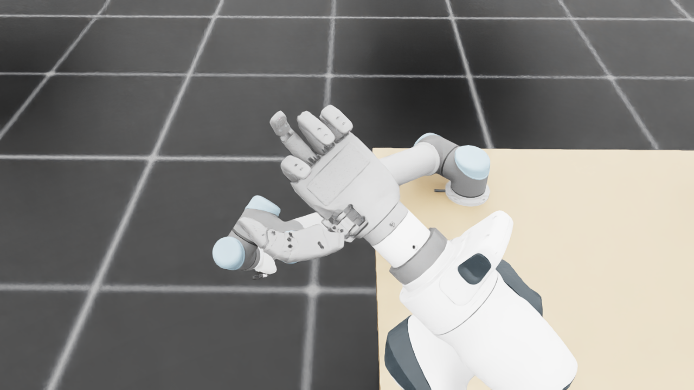
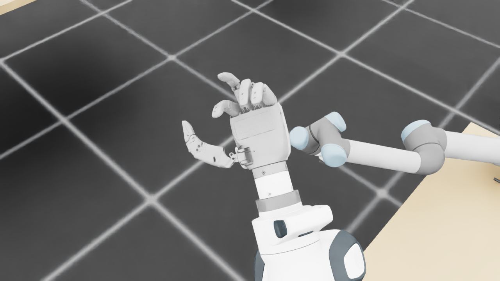
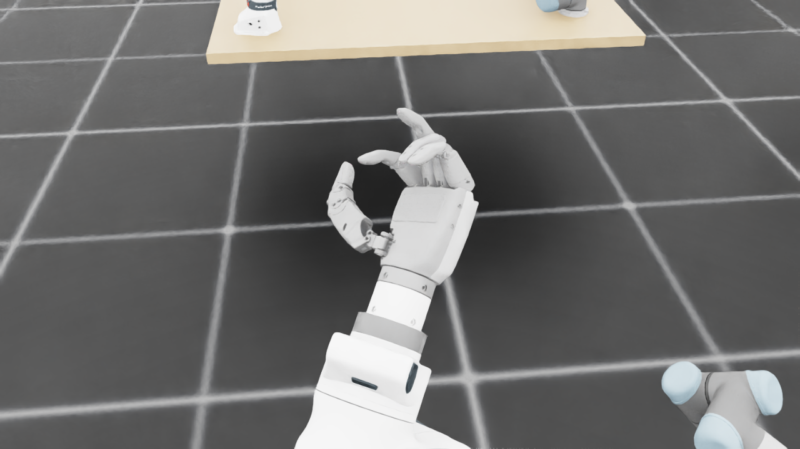
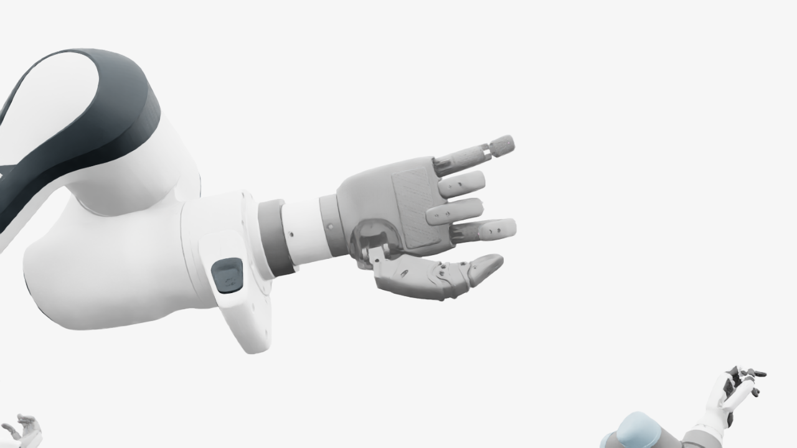
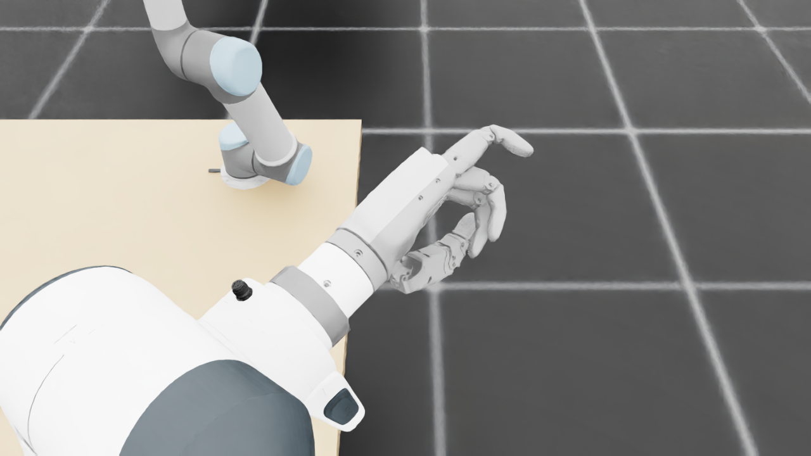
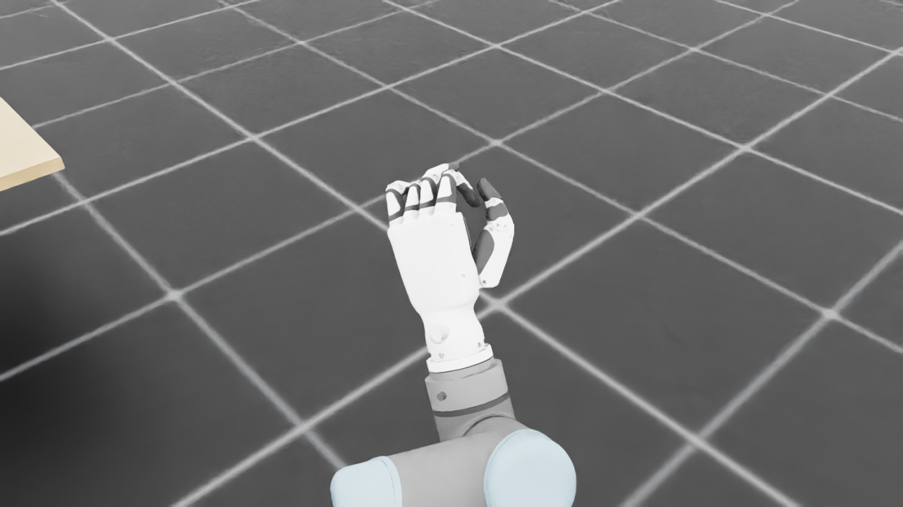
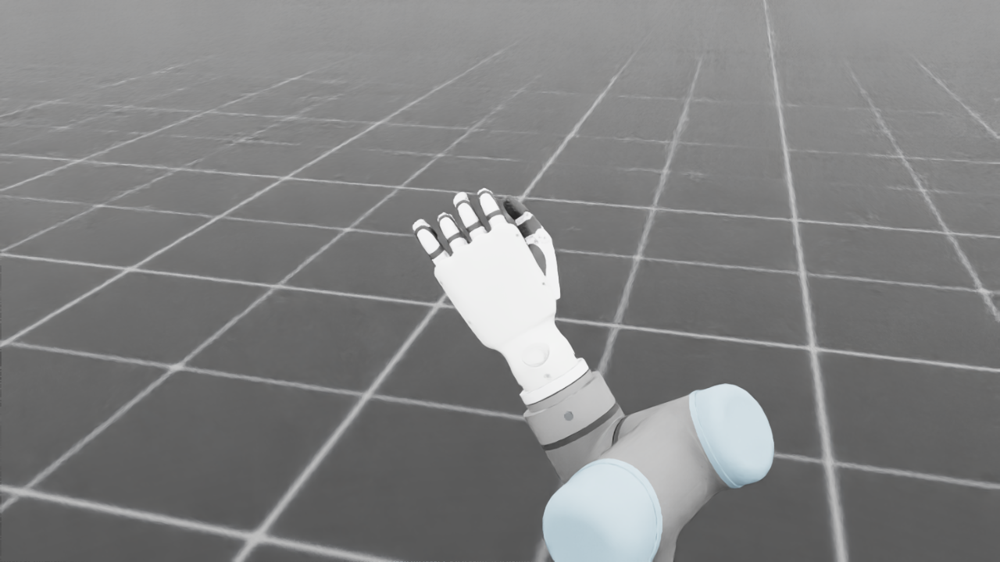
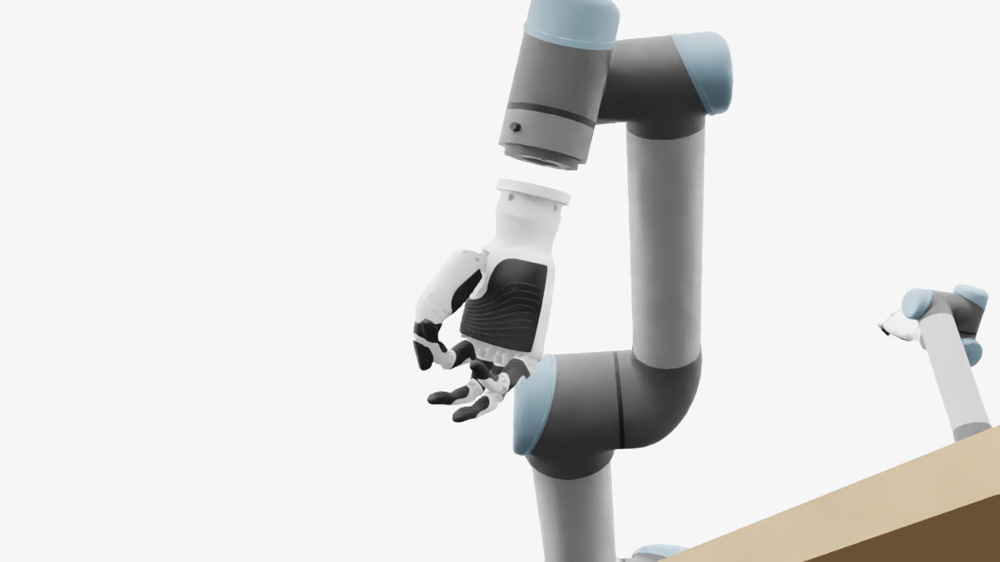
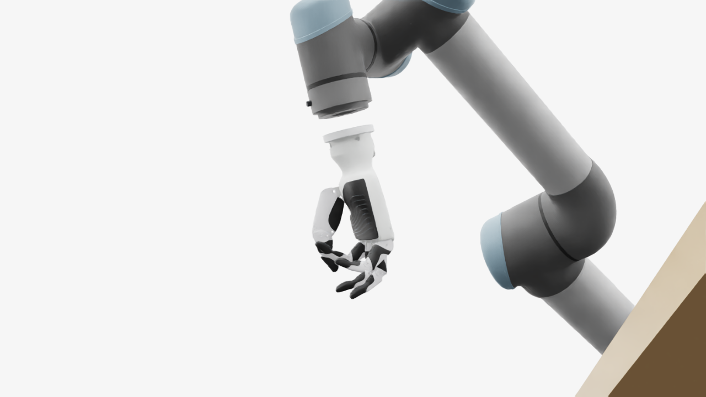
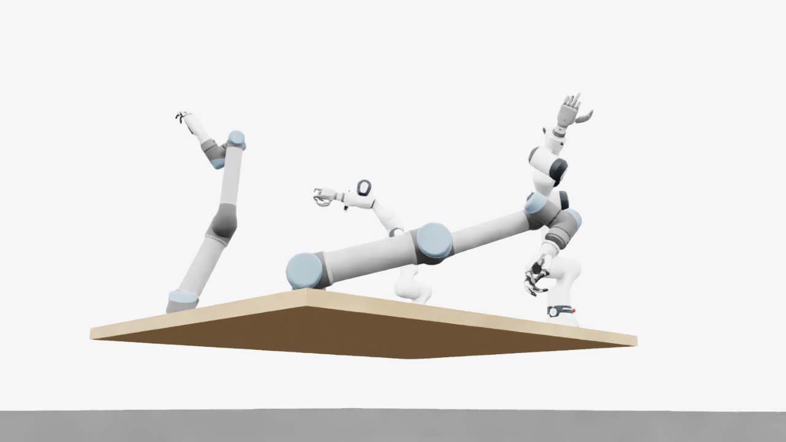
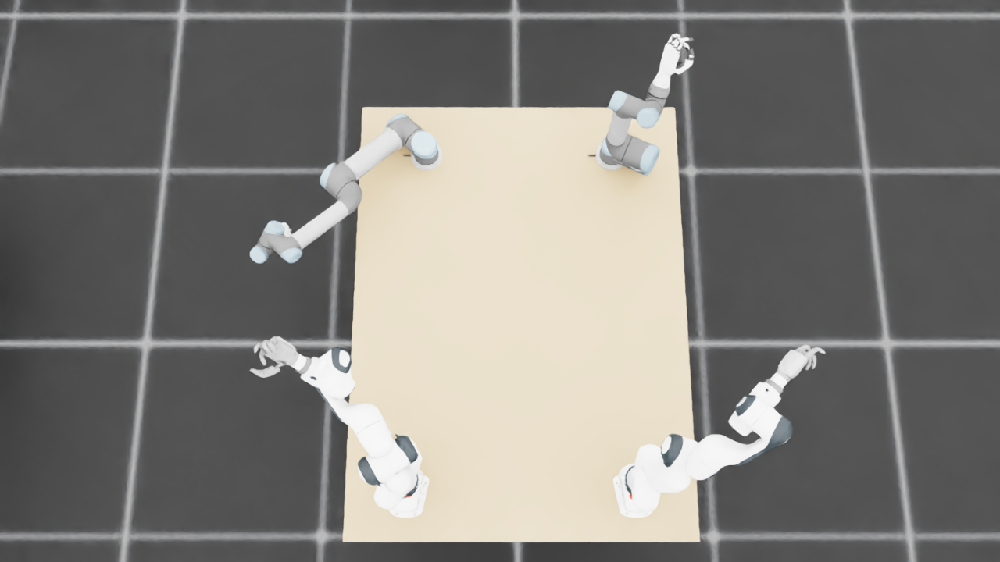
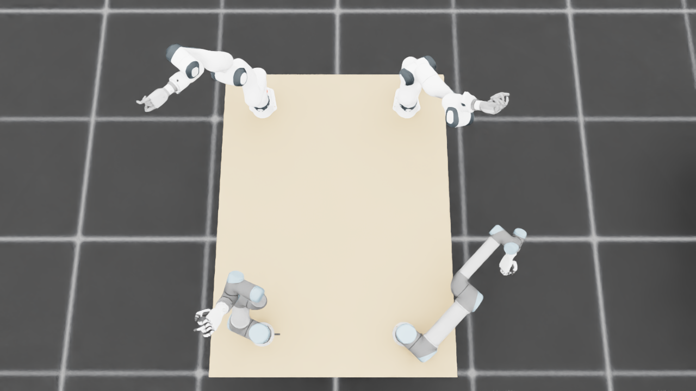
{
"qualified": true,
"arms": {
"F_L": {
"qualified": true,
"palm_visual_peak_pixels": 18939,
"finger_family_peak_pixels": {
"thumb": 10197,
"index": 2622,
"middle": 3137,
"ring": 3075,
"little": 3827
},
"per_native_body_peak_pixels": {
"/World/envs/env_4/F_L/f2_hand/left_hand_base": 31167,
"/World/envs/env_4/F_L/f2_hand/left_index_1": 1259,
"/World/envs/env_4/F_L/f2_hand/left_middle_1": 1856,
"/World/envs/env_4/F_L/f2_hand/left_pinky_1": 2305,
"/World/envs/env_4/F_L/f2_hand/left_ring_1": 862,
"/World/envs/env_4/F_L/f2_hand/left_thumb_1": 793,
"/World/envs/env_4/F_L/f2_hand/left_index_2": 1578,
"/World/envs/env_4/F_L/f2_hand/left_middle_2": 1441,
"/World/envs/env_4/F_L/f2_hand/left_pinky_2": 1787,
"/World/envs/env_4/F_L/f2_hand/left_ring_2": 2213,
"/World/envs/env_4/F_L/f2_hand/left_thumb_2": 5031,
"/World/envs/env_4/F_L/f2_hand/left_thumb_3": 2448,
"/World/envs/env_4/F_L/f2_hand/left_thumb_4": 1925
},
"native_body_visibility_gaps": [],
"all_native_hand_bodies_observed": true,
"full_mesh_coverage_certified": false,
"all_recorded_attempt_peak": {
"qualified": true,
"palm_visual_peak_pixels": 18939,
"finger_family_peak_pixels": {
"thumb": 10197,
"index": 2622,
"middle": 3137,
"ring": 3075,
"little": 3827
},
"per_native_body_peak_pixels": {
"/World/envs/env_4/F_L/f2_hand/left_hand_base": 31167,
"/World/envs/env_4/F_L/f2_hand/left_index_1": 1259,
"/World/envs/env_4/F_L/f2_hand/left_middle_1": 1856,
"/World/envs/env_4/F_L/f2_hand/left_pinky_1": 2305,
"/World/envs/env_4/F_L/f2_hand/left_ring_1": 862,
"/World/envs/env_4/F_L/f2_hand/left_thumb_1": 793,
"/World/envs/env_4/F_L/f2_hand/left_index_2": 1578,
"/World/envs/env_4/F_L/f2_hand/left_middle_2": 1441,
"/World/envs/env_4/F_L/f2_hand/left_pinky_2": 1787,
"/World/envs/env_4/F_L/f2_hand/left_ring_2": 2213,
"/World/envs/env_4/F_L/f2_hand/left_thumb_2": 5031,
"/World/envs/env_4/F_L/f2_hand/left_thumb_3": 2448,
"/World/envs/env_4/F_L/f2_hand/left_thumb_4": 1925
},
"native_body_visibility_gaps": [],
"all_native_hand_bodies_observed": true,
"full_mesh_coverage_certified": false,
"qualification": false
},
"attempts": 3,
"decoded": 3
},
"F_R": {
"qualified": true,
"palm_visual_peak_pixels": 24632,
"finger_family_peak_pixels": {
"thumb": 11466,
"index": 5679,
"middle": 3128,
"ring": 4132,
"little": 5137
},
"per_native_body_peak_pixels": {
"/World/envs/env_4/F_R/f2_hand/right_hand_base": 33497,
"/World/envs/env_4/F_R/f2_hand/right_index_1": 3633,
"/World/envs/env_4/F_R/f2_hand/right_middle_1": 1131,
"/World/envs/env_4/F_R/f2_hand/right_pinky_1": 3127,
"/World/envs/env_4/F_R/f2_hand/right_ring_1": 1811,
"/World/envs/env_4/F_R/f2_hand/right_thumb_1": 779,
"/World/envs/env_4/F_R/f2_hand/right_index_2": 2046,
"/World/envs/env_4/F_R/f2_hand/right_middle_2": 2781,
"/World/envs/env_4/F_R/f2_hand/right_pinky_2": 2010,
"/World/envs/env_4/F_R/f2_hand/right_ring_2": 2321,
"/World/envs/env_4/F_R/f2_hand/right_thumb_2": 6337,
"/World/envs/env_4/F_R/f2_hand/right_thumb_3": 2591,
"/World/envs/env_4/F_R/f2_hand/right_thumb_4": 1975
},
"native_body_visibility_gaps": [],
"all_native_hand_bodies_observed": true,
"full_mesh_coverage_certified": false,
"all_recorded_attempt_peak": {
"qualified": false,
"palm_visual_peak_pixels": 37995,
"finger_family_peak_pixels": {
"thumb": 11466,
"index": 5679,
"middle": 3128,
"ring": 5499,
"little": 6480
},
"per_native_body_peak_pixels": {
"/World/envs/env_4/F_R/f2_hand/right_hand_base": 45878,
"/World/envs/env_4/F_R/f2_hand/right_index_1": 3633,
"/World/envs/env_4/F_R/f2_hand/right_middle_1": 1374,
"/World/envs/env_4/F_R/f2_hand/right_pinky_1": 4054,
"/World/envs/env_4/F_R/f2_hand/right_ring_1": 2636,
"/World/envs/env_4/F_R/f2_hand/right_thumb_1": 1140,
"/World/envs/env_4/F_R/f2_hand/right_index_2": 2046,
"/World/envs/env_4/F_R/f2_hand/right_middle_2": 2781,
"/World/envs/env_4/F_R/f2_hand/right_pinky_2": 2426,
"/World/envs/env_4/F_R/f2_hand/right_ring_2": 2863,
"/World/envs/env_4/F_R/f2_hand/right_thumb_2": 6337,
"/World/envs/env_4/F_R/f2_hand/right_thumb_3": 2591,
"/World/envs/env_4/F_R/f2_hand/right_thumb_4": 1975
},
"native_body_visibility_gaps": [],
"all_native_hand_bodies_observed": true,
"full_mesh_coverage_certified": false,
"qualification": false
},
"attempts": 7,
"decoded": 7
},
"U_L": {
"qualified": true,
"palm_visual_peak_pixels": 9127,
"finger_family_peak_pixels": {
"thumb": 6316,
"index": 2317,
"middle": 1876,
"ring": 2146,
"little": 2161
},
"per_native_body_peak_pixels": {
"/World/envs/env_4/U_L/wrist_3_link": 28992,
"/World/envs/env_4/U_L/left_index_1": 1451,
"/World/envs/env_4/U_L/left_little_1": 1359,
"/World/envs/env_4/U_L/left_middle_1": 1282,
"/World/envs/env_4/U_L/left_ring_1": 1053,
"/World/envs/env_4/U_L/left_thumb_1": 210,
"/World/envs/env_4/U_L/left_index_2": 1082,
"/World/envs/env_4/U_L/left_little_2": 802,
"/World/envs/env_4/U_L/left_middle_2": 1030,
"/World/envs/env_4/U_L/left_ring_2": 1093,
"/World/envs/env_4/U_L/left_thumb_2": 3796,
"/World/envs/env_4/U_L/left_thumb_3": 1622,
"/World/envs/env_4/U_L/left_thumb_4": 718
},
"native_body_visibility_gaps": [],
"all_native_hand_bodies_observed": true,
"full_mesh_coverage_certified": false,
"all_recorded_attempt_peak": {
"qualified": false,
"palm_visual_peak_pixels": 9127,
"finger_family_peak_pixels": {
"thumb": 7234,
"index": 3160,
"middle": 1876,
"ring": 2146,
"little": 2161
},
"per_native_body_peak_pixels": {
"/World/envs/env_4/U_L/wrist_3_link": 28992,
"/World/envs/env_4/U_L/left_index_1": 1941,
"/World/envs/env_4/U_L/left_little_1": 1359,
"/World/envs/env_4/U_L/left_middle_1": 1282,
"/World/envs/env_4/U_L/left_ring_1": 1053,
"/World/envs/env_4/U_L/left_thumb_1": 242,
"/World/envs/env_4/U_L/left_index_2": 1219,
"/World/envs/env_4/U_L/left_little_2": 802,
"/World/envs/env_4/U_L/left_middle_2": 1040,
"/World/envs/env_4/U_L/left_ring_2": 1093,
"/World/envs/env_4/U_L/left_thumb_2": 4265,
"/World/envs/env_4/U_L/left_thumb_3": 1903,
"/World/envs/env_4/U_L/left_thumb_4": 824
},
"native_body_visibility_gaps": [],
"all_native_hand_bodies_observed": true,
"full_mesh_coverage_certified": false,
"qualification": false
},
"attempts": 4,
"decoded": 4
},
"U_R": {
"qualified": true,
"palm_visual_peak_pixels": 10156,
"finger_family_peak_pixels": {
"thumb": 6148,
"index": 2240,
"middle": 1915,
"ring": 2017,
"little": 2728
},
"per_native_body_peak_pixels": {
"/World/envs/env_4/U_R/wrist_3_link": 27936,
"/World/envs/env_4/U_R/right_index_1": 1097,
"/World/envs/env_4/U_R/right_little_1": 1700,
"/World/envs/env_4/U_R/right_middle_1": 1166,
"/World/envs/env_4/U_R/right_ring_1": 1179,
"/World/envs/env_4/U_R/right_thumb_1": 163,
"/World/envs/env_4/U_R/right_index_2": 1143,
"/World/envs/env_4/U_R/right_little_2": 1028,
"/World/envs/env_4/U_R/right_middle_2": 1168,
"/World/envs/env_4/U_R/right_ring_2": 1216,
"/World/envs/env_4/U_R/right_thumb_2": 4111,
"/World/envs/env_4/U_R/right_thumb_3": 1210,
"/World/envs/env_4/U_R/right_thumb_4": 810
},
"native_body_visibility_gaps": [],
"all_native_hand_bodies_observed": true,
"full_mesh_coverage_certified": false,
"all_recorded_attempt_peak": {
"qualified": true,
"palm_visual_peak_pixels": 10156,
"finger_family_peak_pixels": {
"thumb": 6148,
"index": 2240,
"middle": 1915,
"ring": 2017,
"little": 2728
},
"per_native_body_peak_pixels": {
"/World/envs/env_4/U_R/wrist_3_link": 27936,
"/World/envs/env_4/U_R/right_index_1": 1097,
"/World/envs/env_4/U_R/right_little_1": 1700,
"/World/envs/env_4/U_R/right_middle_1": 1166,
"/World/envs/env_4/U_R/right_ring_1": 1179,
"/World/envs/env_4/U_R/right_thumb_1": 163,
"/World/envs/env_4/U_R/right_index_2": 1143,
"/World/envs/env_4/U_R/right_little_2": 1028,
"/World/envs/env_4/U_R/right_middle_2": 1168,
"/World/envs/env_4/U_R/right_ring_2": 1216,
"/World/envs/env_4/U_R/right_thumb_2": 4111,
"/World/envs/env_4/U_R/right_thumb_3": 1210,
"/World/envs/env_4/U_R/right_thumb_4": 810
},
"native_body_visibility_gaps": [],
"all_native_hand_bodies_observed": true,
"full_mesh_coverage_certified": false,
"qualification": false
},
"attempts": 3,
"decoded": 3
}
},
"wide": {
"qualified": true,
"per_native_object_peak_pixels": {
"/World/envs/env_4/F_L/fr3_link0": 1490,
"/World/envs/env_4/F_L/fr3_link1": 2556,
"/World/envs/env_4/F_L/fr3_link2": 1272,
"/World/envs/env_4/F_L/fr3_link3": 2242,
"/World/envs/env_4/F_L/fr3_link4": 2836,
"/World/envs/env_4/F_L/fr3_link5": 2432,
"/World/envs/env_4/F_L/fr3_link6": 2206,
"/World/envs/env_4/F_L/fr3_link7": 892,
"/World/envs/env_4/F_L/fr3_link8": 175,
"/World/envs/env_4/F_L/f2_hand/left_hand_base": 1174,
"/World/envs/env_4/F_L/f2_hand/left_index_1": 57,
"/World/envs/env_4/F_L/f2_hand/left_middle_1": 93,
"/World/envs/env_4/F_L/f2_hand/left_pinky_1": 94,
"/World/envs/env_4/F_L/f2_hand/left_ring_1": 88,
"/World/envs/env_4/F_L/f2_hand/left_thumb_1": 40,
"/World/envs/env_4/F_L/f2_hand/left_index_2": 81,
"/World/envs/env_4/F_L/f2_hand/left_middle_2": 81,
"/World/envs/env_4/F_L/f2_hand/left_pinky_2": 86,
"/World/envs/env_4/F_L/f2_hand/left_ring_2": 99,
"/World/envs/env_4/F_L/f2_hand/left_thumb_2": 197,
"/World/envs/env_4/F_L/f2_hand/left_thumb_3": 77,
"/World/envs/env_4/F_L/f2_hand/left_thumb_4": 64,
"/World/envs/env_4/F_R/fr3_link0": 1335,
"/World/envs/env_4/F_R/fr3_link1": 1403,
"/World/envs/env_4/F_R/fr3_link2": 1745,
"/World/envs/env_4/F_R/fr3_link3": 2715,
"/World/envs/env_4/F_R/fr3_link4": 896,
"/World/envs/env_4/F_R/fr3_link5": 4485,
"/World/envs/env_4/F_R/fr3_link6": 1699,
"/World/envs/env_4/F_R/fr3_link7": 698,
"/World/envs/env_4/F_R/fr3_link8": 171,
"/World/envs/env_4/F_R/f2_hand/right_hand_base": 1201,
"/World/envs/env_4/F_R/f2_hand/right_index_1": 95,
"/World/envs/env_4/F_R/f2_hand/right_middle_1": 62,
"/World/envs/env_4/F_R/f2_hand/right_pinky_1": 122,
"/World/envs/env_4/F_R/f2_hand/right_ring_1": 53,
"/World/envs/env_4/F_R/f2_hand/right_thumb_1": 10,
"/World/envs/env_4/F_R/f2_hand/right_index_2": 50,
"/World/envs/env_4/F_R/f2_hand/right_middle_2": 76,
"/World/envs/env_4/F_R/f2_hand/right_pinky_2": 61,
"/World/envs/env_4/F_R/f2_hand/right_ring_2": 84,
"/World/envs/env_4/F_R/f2_hand/right_thumb_2": 84,
"/World/envs/env_4/F_R/f2_hand/right_thumb_3": 29,
"/World/envs/env_4/F_R/f2_hand/right_thumb_4": 24,
"/World/envs/env_4/U_L/base_link": 424,
"/World/envs/env_4/U_L/shoulder_link": 1479,
"/World/envs/env_4/U_L/upper_arm_link": 4175,
"/World/envs/env_4/U_L/forearm_link": 5045,
"/World/envs/env_4/U_L/wrist_1_link": 1278,
"/World/envs/env_4/U_L/wrist_2_link": 1020,
"/World/envs/env_4/U_L/wrist_3_link": 1435,
"/World/envs/env_4/U_L/left_index_1": 114,
"/World/envs/env_4/U_L/left_little_1": 108,
"/World/envs/env_4/U_L/left_middle_1": 105,
"/World/envs/env_4/U_L/left_ring_1": 115,
"/World/envs/env_4/U_L/left_thumb_1": 9,
"/World/envs/env_4/U_L/left_index_2": 56,
"/World/envs/env_4/U_L/left_little_2": 62,
"/World/envs/env_4/U_L/left_middle_2": 97,
"/World/envs/env_4/U_L/left_ring_2": 55,
"/World/envs/env_4/U_L/left_thumb_2": 206,
"/World/envs/env_4/U_L/left_thumb_3": 90,
"/World/envs/env_4/U_L/left_thumb_4": 50,
"/World/envs/env_4/U_R/base_link": 382,
"/World/envs/env_4/U_R/shoulder_link": 1419,
"/World/envs/env_4/U_R/upper_arm_link": 14805,
"/World/envs/env_4/U_R/forearm_link": 5028,
"/World/envs/env_4/U_R/wrist_1_link": 2035,
"/World/envs/env_4/U_R/wrist_2_link": 1556,
"/World/envs/env_4/U_R/wrist_3_link": 2281,
"/World/envs/env_4/U_R/right_index_1": 184,
"/World/envs/env_4/U_R/right_little_1": 44,
"/World/envs/env_4/U_R/right_middle_1": 116,
"/World/envs/env_4/U_R/right_ring_1": 46,
"/World/envs/env_4/U_R/right_thumb_1": 19,
"/World/envs/env_4/U_R/right_index_2": 62,
"/World/envs/env_4/U_R/right_little_2": 108,
"/World/envs/env_4/U_R/right_middle_2": 162,
"/World/envs/env_4/U_R/right_ring_2": 134,
"/World/envs/env_4/U_R/right_thumb_2": 289,
"/World/envs/env_4/U_R/right_thumb_3": 154,
"/World/envs/env_4/U_R/right_thumb_4": 105,
"/World/envs/env_4/TableF": 115051,
"/World/envs/env_4/TableU": 116723
},
"arm_peak_pixels": {
"F_L": 14740,
"F_R": 16430,
"U_L": 13439,
"U_R": 27179
},
"table_peak_pixels": {
"TableF": 115051,
"TableU": 116723
},
"critical_body_peak_pixels": {
"/World/envs/env_4/U_L/forearm_link": 5045,
"/World/envs/env_4/U_L/wrist_2_link": 1020,
"/World/envs/env_4/U_R/forearm_link": 5028,
"/World/envs/env_4/U_R/wrist_2_link": 1556
}
},
"raw_attempt_count": 31,
"PNG_count": 31,
"angle_records": 31,
"max_actual_angle_identity_error_deg": 0.0,
"held_snapshot_checks": 1354,
"universal_visibility_impossible": false,
"full_mesh_coverage_certified": false
}